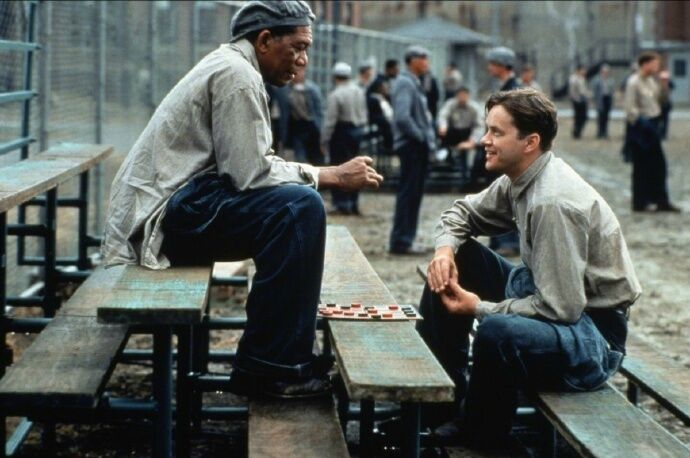
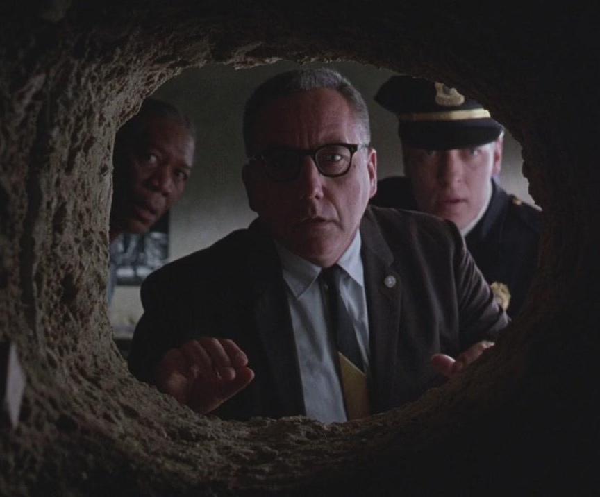
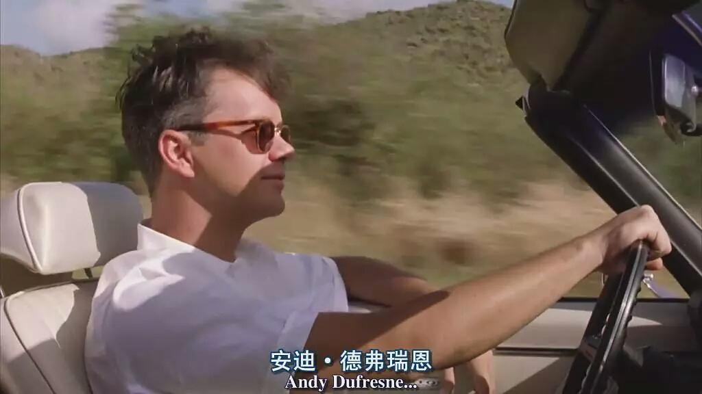

故事的两位主人公谈论着过往的人生经历，以及对未来的无限期盼。在那酷冷的肖申克监狱里，
知己的畅所欲言为他们坚持下去的心灵再一次的淋撒了阳光，浇灌了生的希望。正如他们谈论的一样，
环境的恶性阻挡不了他们对自由的无限渴望。这是电影的主旨，自由才是真正的主旋律。尽管人性险恶
事与愿违，那就咬牙切齿拼出一股劲来。

安迪忍辱负重近20载岁月，敲破了监狱的铜墙铁壁，获得了重生，得到了梦寐以求的自由。图为次日凌晨
狱长发现安迪逃跑的监狱隧道时惊讶的表情。这不仅暗示着安迪的自由，也意味着狱长将会失去自己的自由，并且
名利双失的不堪窘境。社会法则里，不会容忍任何的投机取巧，丧尽天良的坏人终将会受到制裁，无辜的人也终将会得回自由。

主人公安迪越狱成功后，过上了向往的生活。他用了20余年的时间涤尽了罪恶，开始了自己无忧无虑的日子。他留着
腐败监狱长的黑钱，购置了跑车定居在了美丽的海岸边，奔驰在海岸线上，吹着夕阳下的晚风，惬意的享受着这迟到又
已到的自由。正如他所坚韧的20载岁月一样，这一切都是值得的。用自己美好的大半生去实现自己的理想，不被别人打倒。